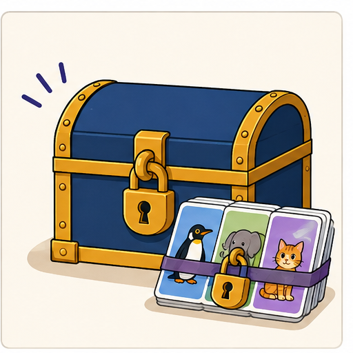
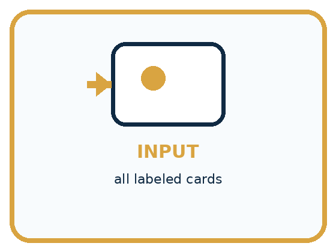
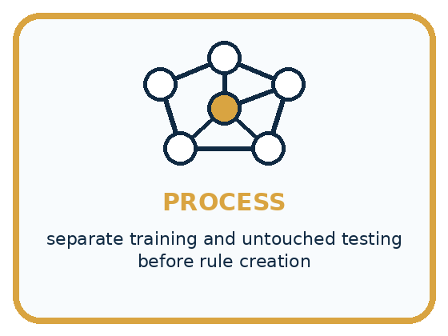
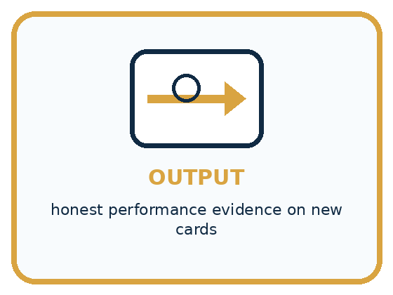
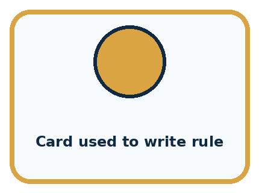
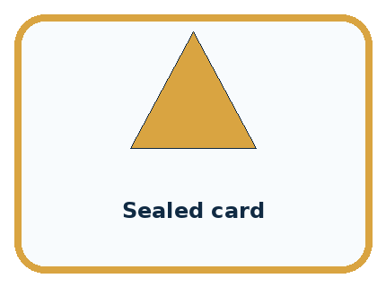
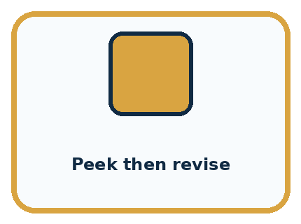
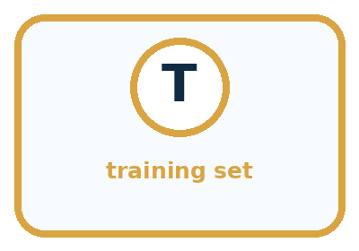
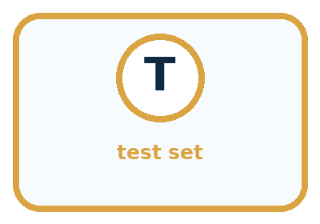
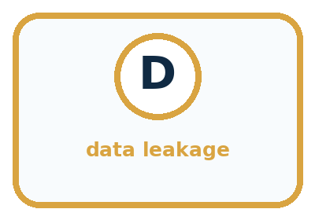

AI Academy · Level 1 · Grade 6 · Week 15 · Student lesson
Save New Examples for Testing
Learn to understand, design, build, test and explain AI systems responsibly.
Project: Helpful Classroom Sorter
Before you start
Week 13: fitting a rule differs from checking unfamiliar examples.
Plan time to read, investigate and explain. Keep predictions separate from observations.
Student lesson · 1 of 14
Your mission
Your learning target
I can separate examples used to choose a model from examples reserved for its final evaluation.
I can record a fixed model and its predictions before revealing comparison labels.
I can explain how test feedback changes the evidence available for a revised model.
Remember before reading
Close your notes first. A rough first answer helps us choose the right starting point; it is not a score for your ability.
Without opening the old lesson, explain one key idea from Build a Human Classifier. Give an example and a mistake that the idea helps you avoid.
Without opening the old lesson, explain one key idea from Debug the Cause. Give an example and a mistake that the idea helps you avoid.
Without opening the old lesson, explain one key idea from Algorithms as Recipes. Give an example and a mistake that the idea helps you avoid.
After trying, check the relevant lesson or ask your teacher. Change the part of your explanation that the evidence shows was wrong.
A fair test uses examples not used to create the decision process.

Learner name:
Readiness for the connected explanation
A height passes the input contract and the model predicts tall. What is still needed to check that prediction? If its comparison label changes your threshold choice, what role has that example played?
This week’s end goal
By the end, I can freeze a model before labels are revealed and report a bounded test result.
Student lesson · 2 of 14
Notice the evidence
PICTURE STORY
Look Closely Before You Explain
Pictures give clues; evidence tells us what the clues mean.

What do you notice?
Name three visible details without explaining them yet.
Circle the detail most connected to the system's decision.
Name one detail that may be decoration or distraction.
Make a first prediction and state the clue that supports it.
My observations, prediction, and evidence:
A closer explanation
A rule chosen to fit examples may work differently on new cases. To investigate that difference, reserve a set of examples before development. Use the development examples to choose the model. Keep the final test examples separate until the model is fixed, then evaluate that recorded model.
In this paper activity, a teacher keeps the reserved examples in an envelope. Record the input contract, feature, category rule and model version before opening it. Once the input values are revealed, predict using the frozen model before revealing their comparison labels. This prevents copying the labels into the predictions.
The worked example below describes a completed experiment, so its test labels are visible for discussion. It is not an unseen test for you. In the workbook experiment, the teacher will supply a separate set of comparison labels after you have saved your predictions. All data are imaginary classroom records.
Student lesson · 3 of 14
See how it works
VISUAL MECHANISM
Input → Process → Output
Follow the information instead of imagining magic inside the machine.



INPUT all labeled cards
PROCESS separate training and untouched testing before rule creation
OUTPUT honest performance evidence on new cards
Draw a fresh example with all three stages:
A closer explanation
Different roles for development and final testing
In the completed experiment, development towers at heights 2, 4, 6 and 8 cm have labels short, short, tall and tall. Candidates predict tall at or above 5 or 6 cm. Both fit all four labels; the stated smaller-threshold tie rule selects 5. The team freezes model TowerA with threshold 5.
The reserved inputs are different records at heights 3, 5, 7 and 9 cm. TowerA accepts whole cm heights from 1 through 10. It predicts short, tall, tall and tall. These predictions are saved before the reserved labels are opened. The comparison below records what happened, including the failure.
Connect the picture and the explanation
Point to the input, the deciding step and the result in this week’s visual. Explain the same step in ordinary words. A picture helps when you can say what each part represents.
Student lesson · 4 of 14
Compare the cases
PICTURE GALLERY
Four Cases, Four Clues
Use the visual cue, then read the evidence carefully.



CASE 1 — Card used to write rule Clue: belongs in learn pile. Meaning: training evidence.
CASE 2 — Sealed card Clue: unseen until final run. Meaning: test evidence.
CASE 3 — Peek then revise Clue: test influenced process. Meaning: leakage.
CASE 4 — Fresh local card Clue: new after design. Meaning: strong transfer check.
Which two pictures are easiest to confuse? What evidence separates them?
Change one thing in the pictured case
Change: After feedback, change the boundary to 5.
Prediction: The revised rule matches all four known labels but needs a different final test.
Reason: These labels influenced the revision, so replaying them is evidence of repair rather than unseen performance.
Student lesson · 5 of 14
Words that unlock the idea
VOCABULARY
Words You Can See and Use
The badge is a memory cue; the definition does the real thinking work.



| Word | Meaning | My example |
|---|---|---|
| training set | examples used to create or adjust a process | |
| test set | untouched examples used for final checking | |
| holdout | data deliberately kept separate | |
| data leakage | test information influences design |
Misconception detective
CLAIM TO REPAIR Testing on familiar cards is fair because there are more correct answers.
Use one vocabulary word and one piece of evidence to repair it:
Words used in the closer explanation
| Word | Meaning |
|---|---|
| Development examples | Examples available for fitting, comparing or revising a model |
| Held-out test set | Examples reserved from development for evaluating a fixed model |
| Freeze | Record a model and stop changing it for a particular evaluation |
| Test leakage | Information from a reserved test influencing model development |
| Evaluation record | A record of the tested model, predictions, comparison labels and results |
Student lesson · 6 of 14
Follow a worked example
WORKED EXAMPLE
Watch the Reasoning, Not Just the Answer
Every step connects a claim to observable evidence.

STEP 1 — OBSERVE all labeled cards
STEP 2 — TRACE separate training and untouched testing before rule creation
STEP 3 — CONCLUDE honest performance evidence on new cards
What new evidence could change this answer?
A closer explanation
| Reserved height | Saved TowerA prediction | Revealed comparison label |
|---|---|---|
| 3 cm | Short | Short |
| 5 cm | Tall | Short |
| 7 cm | Tall | Tall |
| 9 cm | Tall | Tall |
TowerA agrees on three of these four reserved examples and disagrees at 5 cm. That is evidence about this fixed model on this small set. It does not prove a success rate for every future tower. The labels, range of examples and way records were selected also matter.
After seeing the 5 cm label, the team changes the threshold to 6 and names the revision TowerB. TowerB agrees on all four of these now-seen examples. The change may be useful, but those examples have influenced its development. Four agreements on them are not an independent final test result for TowerB. Keep TowerA’s original three-of-four record.
Learn from the worked case
Cover the result before checking it. Say what is given, choose the procedure, and follow one step at a time. Then uncover the result and explain your first mismatch. Ask why a step is allowed, not only what number it produces.
A pictorial worked case: Save New Examples for Testing
A fictional envelope exercise evaluates a fixed pencil-length sorter.
The facts we will use
Freeze PencilP: long at least 6 cm; short below 6.
Reserved valid lengths are 3,5,6,9 cm. Teacher envelope labels, revealed only after predictions, are short,long,long,long.


Read the picture one step at a time
Why this result follows
The prediction record must exist before the labels are seen. PencilP scores 3/4=75% agreement on these four selected cases. Moving the boundary after inspecting the envelope makes this a development exercise; the same four cases can no longer serve as untouched final evaluation.
What this example does not establish
Four selected cases cannot establish a reliable accuracy rate for every future pencil or classroom.
Student lesson · 7 of 14
Find and repair a mistake
COMPARE
Same Result, Different Reason
A comparison helps reveal the true concept boundary.
| Case | Evidence | What it shows |
|---|---|---|
| Card used to write rule | belongs in learn pile | training evidence |
| Sealed card | unseen until final run | test evidence |
| Peek then revise | test influenced process | leakage |
| Fresh local card | new after design | strong transfer check |
Repair two tempting claims
CLAIM A Testing on familiar cards is fair because there are more correct answers.
Repair:
CLAIM B Looking at test cards without labels cannot affect design.
Repair:
A closer explanation
Keeping a set unseen is necessary for this kind of independent check, but secrecy alone does not make it a good test. Four near-identical easy cases provide little evidence about varied cases. Copies of development records can also make a reserved set misleading even if their file names differ.
Define what future cases the model is meant to handle and choose evaluation examples that address that use. Keep related or copied records together when separating sets. Record invalid inputs and no prediction outcomes separately instead of quietly dropping them from the report. Later weeks examine coverage and performance comparisons in more detail.
Student lesson · 8 of 14
Practise together
GUIDED PRACTICE
Try It, Check It, Explain It
Use support now so you can succeed independently later.

Explain how the picture story demonstrates this idea: A fair test uses examples not used to create the decision process.
Use a fresh example to explain training set.
Trace a new input → process → output example.
Find and repair the error in: Looking at test cards without labels cannot affect design.
Invent one edge case and name the safe response.
A closer explanation
Improvement after a test is allowed. State that the old test informed the revision, preserve both versions, and reserve fresh appropriate examples to evaluate the revised model independently. If none are available, report that limitation instead of inventing a fresh test result.
A test can lose independence even when you never copy its labels into a training table. Repeatedly trying thresholds and choosing the one with the best test score also uses test information to choose the model. Separate development comparisons from the final check.
Practise with less help: Preserve the original result
Use workbook W2 for the connected example “Keeping final tests unseen”. First fill the input and rule boxes. Try the middle steps before asking for a hint. After a hint, try the next step yourself.
| Plan | Do | Check |
|---|---|---|
| What is given? Which rule or procedure applies? | Record each intermediate step. | Does the result follow? What remains unknown? |
Explain your trace to a partner. Your partner points to one step to check. Swap roles on the next case. Each person writes their own explanation.
Check your reasoning
Use the worked case for Keeping final tests unseen. Proposed explanation: “A new file makes old records unseen”. Decide whether this explanation is supported. Point to the step or supplied fact that decides; explain your repair if needed.
Answer on your own before discussion. If you are unsure, say which step you need help with.
Explain the picture
Does 4/4 on the replay replace the original 3/4 result? Explain.
This is supported practice. Keep the separately named independent case for an attempt before feedback.
Student lesson · 9 of 14
Run the investigation
EXPLORER LAB
Learn/Test Envelope Split
Predict first, test honestly, and explain what the evidence means.

State your prediction before the result is known.
Complete the task: Split card data into learn and test piles before sorting.
Keep a normal case and an edge case clearly separated.
Record what happened—even when it does not match your prediction.
Explain the result, one limitation, and the next useful test.
| Case | Prediction | Observed result | What it means |
|---|---|---|---|
| Normal | |||
| Edge |
Plan → try → check
Before trying: what do I expect, and why? While trying: which step could first go wrong? Afterwards: what did I actually observe, and what should change? Keep “not run” if you only traced the procedure.
Student lesson · 10 of 14
Build your understanding
PRACTICE LADDER
Climb from Recall to Defense
Each step asks for a stronger kind of understanding.

RECALL Define training set.
EXPLAIN A fair test uses examples not used to create the decision process.
TRACE Show the input, process, and output.
DIAGNOSE Repair: Testing on familiar cards is fair because there are more correct answers.
TRANSFER Apply the idea to a new home or classroom case.
CREATE Design one revealing test.
DEFEND Give a claim, evidence, mechanism, limit, and safe action.
Student lesson · 11 of 14
Connect your project
PROJECT
Helpful Classroom Sorter
Build one coherent system across the year, one evidence-based decision at a time.

What real classroom need does this serve?
What information is necessary—and what should stay private?
What happens inside the process?
What normal and edge cases will you test?
When should it say not sure or ask a person?

My project decision:
Evidence for your project
Maintain dated sorter versions and separate development examples from reserved project-evaluation cases.
Student lesson · 12 of 14
Show what you know
MASTERY
Fresh-Case Independent Proof
Complete this after teaching and guided practice have ended.

□ Name or draw the fresh case.
□ Trace input, process, and output.
□ State the conclusion and strongest evidence.
□ Name one limit, failure, missing clue, or fairness/privacy concern.
□ Explain one safe next action or improvement.
Independent evidence:
My level: □ Not yet □ With one hint □ Independently □ I can teach it
Student lesson · 13 of 14
Study a complete case
Week 15 Worked case
Use the supplied details to practise the weekly concept before attempting the independent question. This case extends the illustrated lesson.
The situation
Cards A–F are used for practice. G and H remain sealed.
The question
Which can provide a fresh test, and under what condition?
Worked explanation
G and H, only if neither influenced teaching or revision. Familiar cases do not establish unseen performance. Keep final test answers separate.
Explain it in your own words
Which detail supports the answer, and why does it matter?
Trace the supplied case visually
Keep the final cards unseen
| Evidence or stage | Value or result |
|---|---|
| Practice A–F | 6 |
| Sealed test G–H | 2 |
Cards A–F are used for practice. G and H remain sealed.
Which can provide a fresh test, and under what condition?
G and H, only if neither influenced teaching or revision. Familiar cases do not establish unseen performance. Keep final test answers separate.
Student lesson · 14 of 14
Try a new case independently
Independent case: Run a separate ribbon experiment
Before receiving any test labels, freeze RibbonA: whole cm lengths 1 through 12, long at least 6 cm and short otherwise. Save predictions for 5, 7, 9 and 11 cm. Ask your teacher to reveal the reserved labels, then record agreements, disagreements and a limited result statement. If you later choose threshold 8 after seeing these labels, explain how you must describe its result on the same records.
Attempt this case before feedback. Record any help. Earlier examples below are further practice; a case already practised with feedback cannot establish fresh transfer.
Week 15 Independent application
Close the worked explanation. Apply the idea to this different question without copying.
You teach a sorter using cards A, B and C. You keep D and E unseen. Which cards provide the fairer first test? What changes if you show D during teaching?
My answer, with a trace, calculation or supporting evidence
Create and test
Change one relevant detail. Predict the result before testing. Include a boundary or missing-information case when it helps reveal a limit.
My changed input and expected result
Connect to your project
Create separate learn and test envelopes for the Classroom Sorter and label who may open each.
The evidence I will keep
Your teacher has the independent answer and scoring criteria. Complete the matching workbook week to keep your practice evidence together.
Transfer practice from the original programme
Eight cards are used to invent a rule. Four sealed cards are then opened; the team changes its rule after seeing errors. Can those four cards still be called an untouched final test? Plan what to do next.
Use feedback to improve
Attempt the independent case before hints. Record whether you worked alone, used a hint or followed a model. After feedback, fix the first unsupported step and explain why it changed. A later check uses a changed case, not a copied answer.